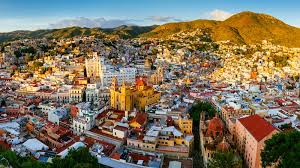

Guanajuato es una ciudad central de México. Es conocida por su historia minera de la plata y su arquitectura colonial. Su red de túneles, pasajes y calles estrechas se representa en el Callejón del Beso, llamado así porque los balcones están tan cerca entre ellos que una pareja alcanza a besarse. En un antiguo granero, se encuentra el museo de historia local y arte Alhóndiga de Granaditas, con exhibiciones precolombinas.
